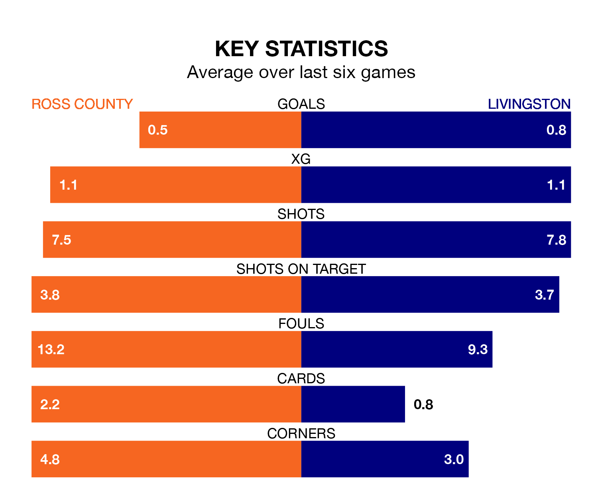

Struggling Livingston face Ross County away at the Global Energy Stadium on Saturday looking to build on a win in their last league outing.
After securing all three points with a 1-0 victory over St. Mirren on February 17, Livingston sit bottom of the Premiership.
They travel to play a Ross side 11th in the standings, who lost in their last match, 2-0 against Dundee.
Ross are in terrible form in the Premiership, with no wins and a draw from their last six games.
With a win and a draw over that period, Livingston's form is better – they have taken four points from 18, compared to County's one.
In the last 10 years, Ross and Livingston have played each other on 17 occasions. Ross won three of them, Livingston nine, and they drew five times.
On average, the Staggies scored 0.9 goals and Livingston 1.6 in those matches.
Their last meeting was on January 30, when they played out a 2-2 draw.
With 16 goals in 26 games so far this season, the away side are the league's lowest scorers with 0.6 goals per game. And they are conceding more than average, letting in 42 goals at a rate of 1.6 per game.
The Staggies are also below average scorers, with 0.8 goals per game, compared to a league average of 1.3. They have conceded 1.7 goals per game.
In Simon Murray, the hosts have one of the league's sharpest shooters so far this season. He has notched seven goals in 25 appearances, to sit ninth in the scoring charts.
Livingston's top scorers, with three goals each, are Sean Kelly and Bruce Anderson.
Saturday's match will be refereed by David Dickinson, who has taken charge of 13 Premiership games so far this season, issuing one red card and booking 54 players. He has awarded two penalties.
The last Ross game Dickinson refereed was a 3-0 home win against Motherwell on December 5. His last Livingston match was their 1-0 loss away at Kilmarnock on February 7.
Updated: 10:08 (UTC), 23/02/24